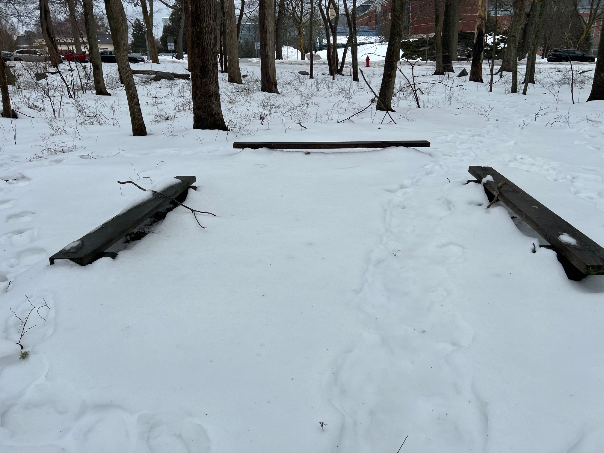
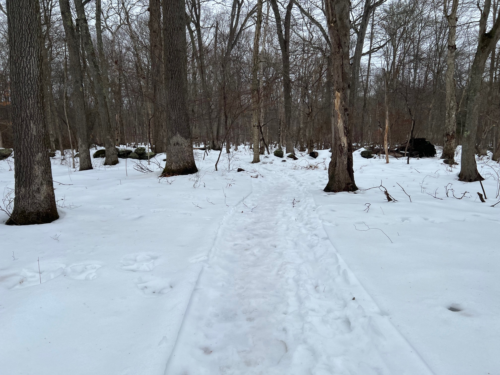
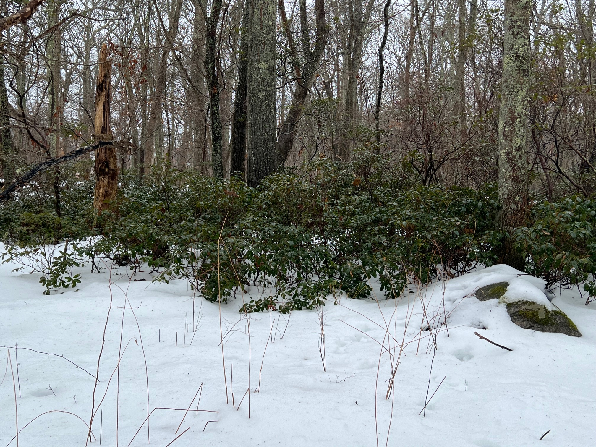
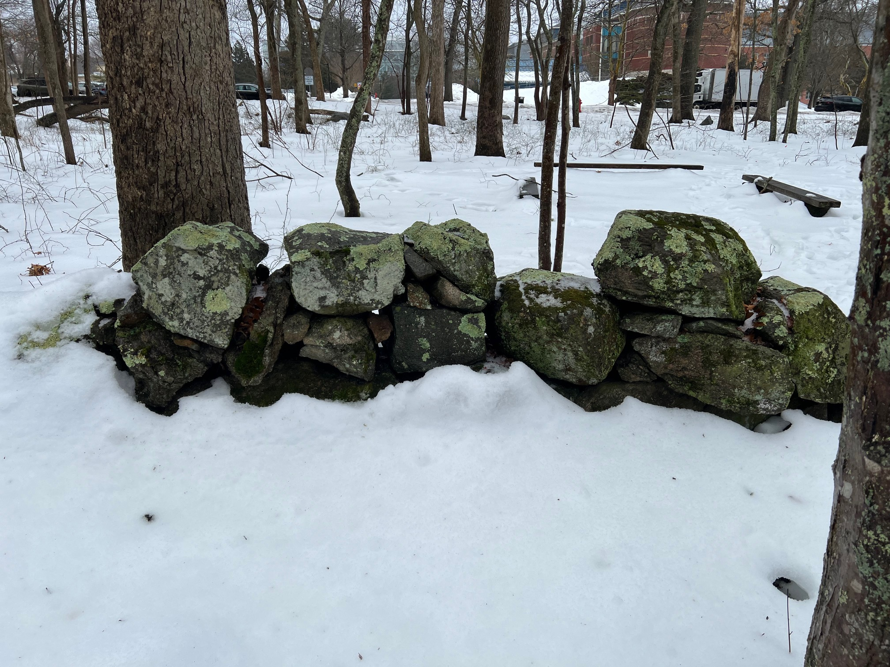
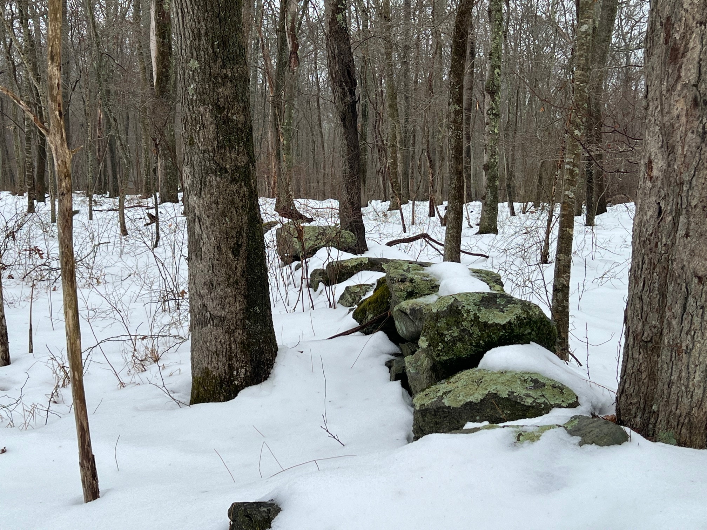
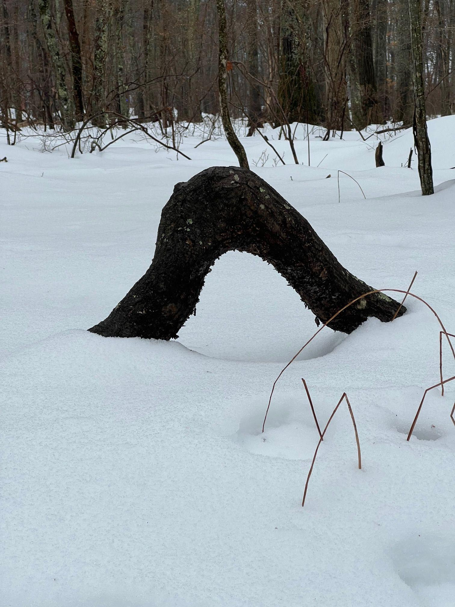
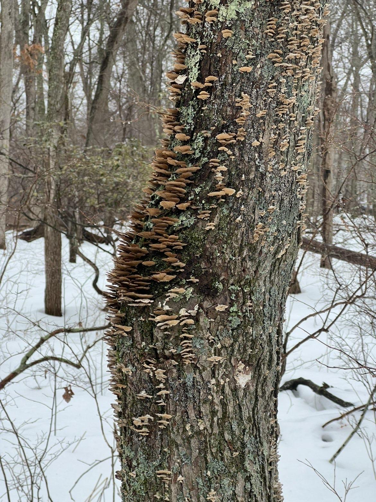
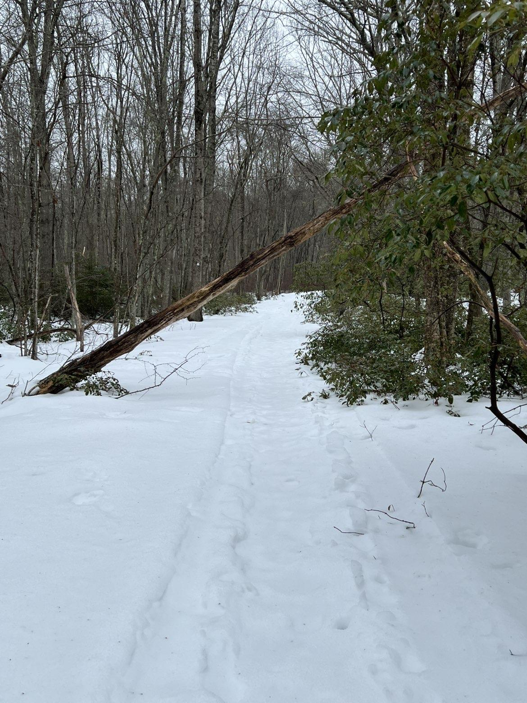

Oftentimes in our daily lives we go from place to place, from stop to stop, bouncing from one location to another without necessarily truly taking in our surroundings. As of late, there has been a growing trend of people claiming to live on "autopilot", that is, can perform their day to day tasks and exist without being fully present, conscious, or actively aware of what they are currently doing. Now given that is the case, it makes sense why nature seems to be only the background of people’s days, not a priority to appreciate or really take in and reflect upon. The nature of Rhode Island, especially the coasts, are sought out by residents and nonresidents every year, typically in the summer months only. In the winter, however, the beaches are no longer favorable, most plants die, and then nature goes back to being a backdrop in our day to day lives. The North Woods at the University of Rhode Island’s Kingston campus show us why it is still important to pay attention to the nature around us in the digital age, especially in the winter months. There is a dramatic lesson to be learned about resilience that can be applied to nature and also ourselves as individuals and a society. Our journey into the North Woods was a transformative experience and lesson about the importance of resilience that we are eager to share with you.
Before delving into our theme from the woods, we would like to briefly introduce the North Woods to anyone who is unfamiliar with them. Just a quick walk from the dorms at the University of Rhode Island sits the North Woods which are a 307-acre forest that feels completely separate from campus life. There are a handful of trails and trail combinations that anyone can go on, regardless of whether you are a student at the University of Rhode Island or not. Despite the close proximity to the university, anyone can go on the trails, like community members, or those even outside the general area. The woods are home to a plethora of biodiversity, ranging from plant species to animals, especially in the warmer months. Additionally, students get a lot of use out of the woods and some classes even take place and meet in the woods, making the space an experimental classroom and learning area.

Lastly, the woods are continuously maintained and well groomed and are open and accessible all the time all year round. On February 20th, we had the pleasure of visiting the North Woods and learning the lessons it had to teach us in the afternoon. We took to the trails and began to be immersed in the world around us, unimaginable from the comfort of our dorms. Here is our journey.
Our first attraction on our journey is going to be at the beginning of the trail pictured below.

In winter, it appears still and almost lifeless at first glance. Snow covers the forest floor and trees stand bare. The woods are quiet and they lack the livelihood they would typically house in the spring and summer months. You could never begin to imagine the atmosphere of wind blowing, birds chirping, and people walking around that would accompany you in July. Despite all the snow, it is clear that the trails still are maintained and accessible to the public. Taking in all the sights and truly reflecting on the image, the quiet resilience shines through. Despite the adverse weather conditions the woods stay strong. The trees are solid and stand tall and you can see what appears to be prints, whether animals or humans, showing that life continues and flows all throughout the woods.

As we continued on the trail we passed bushes and evergreen trees. These trees and bushes stay strong and refuse to die and go into the cold of the winter. The undying resilience of the vibrant greenery is a symbol of hope urging us to power through and stay strong. It is a powerful message that inspired us. If nature can survive even in the most unlikely situations, we too can remain resilient and strong when the odds are stacked against us.


In discussion of our journey it is important to always reflect upon what came before, which is exactly what we did. Pictured above are the old stone rock walls that shine a light on the old settlements of the woods before our time. The fact that these stone walls have been here for generations adds to the resilience of the wood, making sure we do not forget the rich history that lives in the woods before us.

Resilience takes many shapes and forms. Sometimes it is more direct, and other times subtle. Picture above is a fairly subtle takeaway about resilience. This part of the tree, assuming it to be the root, grew in an extraordinary way. The flexibility of the root is a lesson that resilience is not about resisting pressure completely, but adapting to it. Our roots are who we are and how we are grounded as individuals and a society. Life is not perfect, and therefore our roots will never be completely straight and unbothered or never tested by life. Despite that, instead of letting the roots snap and break, we must learn to let them bend and adapt to life’s pressures and tests.

We found a tree that was covered in clusters of small fungi growing out from the bark. We saw how the fungi growing on the tree are part of the forest’s natural cycle. While they are breaking down the wood of the tree, they are also returning nutrients back into the soil and allowing new life to emerge in the ecosystem. What may appear to be destruction is actually a form of recycling of nutrients and renewal. This moment reminded us that resilience is sometimes about transformation. Just as the tree continues to support life even as it slowly breaks down, individuals and communities can also find ways to contribute and grow even during periods of difficulty or transition.

As we continued further, we came across a tree that had fallen in front of the trail. At first, it appeared to be an obstacle interrupting the otherwise peaceful walk through the woods. In life, just like on the trail, obstacles can appear when we least expect them. They interrupt our plans and force us to change our direction. However, obstacles can simply force us to adapt. Just as hikers in the woods must step around the fallen tree or find another way forward, people in life must learn to navigate around challenges that appear in their path. Even in collapse, the tree remains part of the living ecosystem, serving as a home to other insects and plants. This reinforces the idea that resilience is not always about standing tall forever, but continuing to provide value and purpose even after a setback.
Conclusion
Our journey through the North Woods revealed far more than just a quiet winter landscape. What initially seemed like a dormant forest covered in snow slowly revealed itself to be full of life, history, and powerful lessons about resilience. Through the standing trees, the evergreen plants that remain vibrant during the winter, the historical stone walls, the bending roots, and even the fallen or decaying trees, the woods continuously demonstrate that resilience takes many forms. Sometimes resilience looks like strength, like the tall trees standing firmly. Other times it appears as adaptability, like roots bending around obstacles or hikers navigating around a fallen tree. In other moments, resilience reveals itself through renewal and transformation, as seen in the fungi breaking down old wood. Beneath the snow and silence, life continues to adapt, persist, and prepare for renewal. In many ways, this mirrors the experiences of people and communities. Life inevitably brings challenges, obstacles, and periods that feel quiet or uncertain. Yet, just like the forest, resilience allows us to adapt, continue forward, and eventually grow again.
In a fast-paced digital world where many people overlook the natural environment around them, places like the North Woods serve as important reminders to pause, observe, and reflect. Nature has countless lessons to offer, and one of the most important among them is resilience. By taking the time to walk the trails, observe the landscape, and reflect on its meaning, we are reminded that resilience is not only a characteristic of the forest, but also something that exists within ourselves.